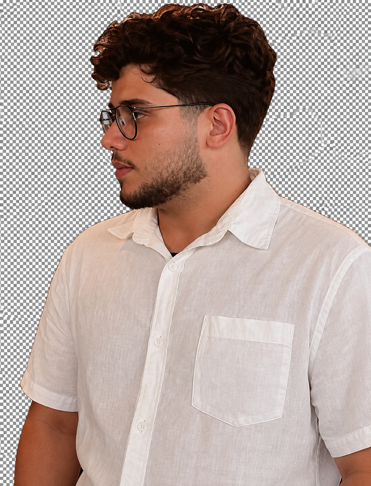

Vinícius Rodrigues Arquitetura Mobile em escala & sistemas Full Stack.
Engenheiro de software especializado em Flutter, Dart e Kotlin para Android e iOS, com atuação sólida em React e NestJS. Experiência comprovada liderando decisões de arquitetura, unificando codebases complexos e construindo sistemas de missão crítica na STTP, Bus2 e Accenture.

Flutter, Dart & Kotlin em Escala de Produção
Mais de 4 anos projetando e publicando aplicativos Android e iOS desde a concepção até a Google Play e App Store. Domínio de Clean Architecture, MVVM, BLoC/Cubit, Flutter Modular e Flavors, com experiência prática em geolocalização em tempo real via WebSocket, persistência offline com SQLite, Method Channels nativos e processamento paralelo com Dart Isolates.
Ecossistema Web, APIs & Automação CI/CD
Atuação transversal integrando interfaces web em React e TypeScript a serviços backend em NestJS, Java (Spring Boot) e bancos SQL/MongoDB. Estruturação completa de esteiras de CI/CD com GitHub Actions e Jenkins para versionamento, testes automatizados (Unit, Widget e Integration) e deploy contínuo.
Arquitetura pensada para durar e escalar.
“Meu foco como engenheiro de software é transformar complexidade arquitetural em produtos móveis e web rápidos, previsíveis e fáceis de manter pela equipe.”
Iniciei minha trajetória profissional em janeiro de 2022 na STTP, enquanto cursava Engenharia de Computação no Instituto Federal da Paraíba (IFPB). Desde o início, atuei diretamente em aplicações reais de mobilidade urbana, implantando pipelines de CI/CD que reduziram o tempo de publicação nas lojas pela metade e estabelecendo uma cultura de testes automatizados com cobertura superior a 80%.
Na Bus2, assumi desafios de escala internacional: executei a refatoração arquitetural completa do AppBus2 v5 — unificando múltiplos repositórios fragmentados em um único codebase Flutter com Flavors para uma base de milhões de usuários — e desenvolvi o aplicativo operacional Bus2Driver com rastreamento em tempo real via WebSocket e otimizações profundas com Dart Isolates e Method Channels.
Evoluí para Mobile Development Lead na STTP, conduzindo decisões de arquitetura, padrões de código e mentoria técnica em mais de 5 aplicações em produção, somando a essa bagagem minha atuação corporativa na Accenture e minha pesquisa aplicada em Inteligência Artificial embarcada no dispositivo com o projeto LocalSpeak.
Experiência em Produção.
Histórico detalhado de liderança técnica, arquitetura mobile, desenvolvimento full stack e impacto mensurável em engenharia de software.
Projetos & Engenharia.
Stack & Ferramentas.
Tecnologias, padrões de arquitetura e ferramentas aplicadas em projetos de produção.
Base Acadêmica.
Vamos conversar sobre engenharia, produto ou novas oportunidades?
Disponível para posições e projetos em Desenvolvimento Mobile (Flutter / Kotlin), Full Stack (React / NestJS) e Arquitetura de Software.